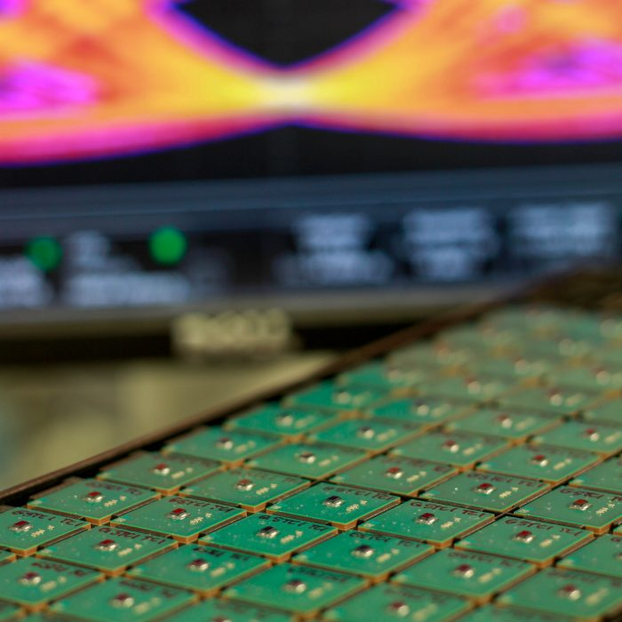

Our 56Gbps PAM4 SerDes IP Hits the Lab
At eSilicon we’ve been talking about adding a 56G PAM4 SerDes to our N7 ASIC IP platform now for some time. I’m happy to say our 7nm FinFET 30 Gbaud/s PMA test chip silicon is now in the lab and we have lots of good news to share!

We’ve successfully passed the smoke test (none escaped – all good!) and are romping through the full set of registers.
All of the sub blocks have now been brought up operationally and are fully functional with their performance data showing all parameters are inside the pre-silicon modeling and calibration bounds. Detailed characterization of each is now under way.
On the speed front, both the Tx and Rx circuitries have been shown to operate over the full frequency range targeted by the design.
Power consumption of the silicon as compared to models is always a concern. Here we have been able to show it is as low as had been predicted.
The firmware development process is well under way with NRZ operation already supported and PAM4 nearly operational. The Rx and Tx adaptation algorithms are in their early stages and already showing good results including support for channels with insertion loss (IL) greater than 30dB.
A key goal for this IP is the signal quality tool set. The development work starting with slicer histograms, SNR calculations and eye diagrams have already achieved their initial milestones.
To round out the story, the IBIS and statistical model generation processes have started and the statistical model tool is nearing its usability threshold.
Our existing test board is operating as expected with the new silicon. This board was originally used to characterize the 28nm 56Gbps demonstration vehicle. Plus, an updated board design supporting our next generation 112Gbps PAM4 SerDes IP is in development.
Keep your eyes on this space for more news as we move into certifying the IP for full release.
To learn more, contact your eSilicon sales representative and visit eSilicon’s SerDes IP or 7nm networking IP platform web pages.